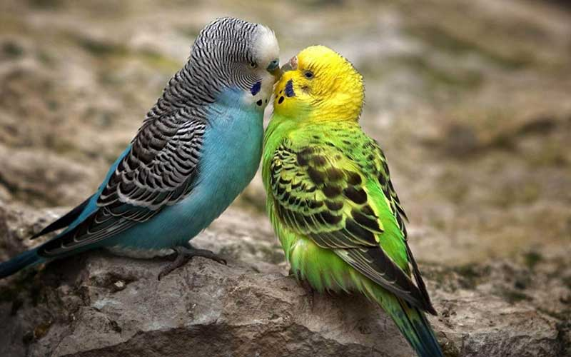
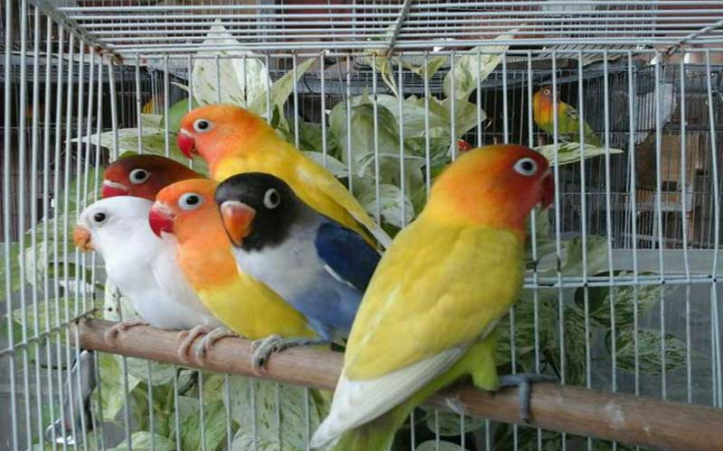

นกฟอพัส (Forpus)
เป็นนกอีกชนิดหนึ่งที่ได้รับความนิยมนำมาเลี้ยงเป็นเพื่อน โดยปล่อยให้บินได้ภายนอกกรง หรือในอาคาร สาเหตุที่เป็นเช่นนี้ ก็เพราะว่า นกฟอพัส เป็นนกแก้วขนาดเล็กมาก แถมมีสีสันสวยงาม เสียงไม่ดังจนเป็นที่รำคราญ สามารถปล่อยให้บินในที่พักได้ ซึ่งทำให้เกิดความประทับใจต่อผู้ที่ได้เลี้ยงนกชนิดนี้เป็นอย่างมากที่ได้ชื่นชมความสวยงามของตัวนกและความน่ารักเมื่อเจ้านกตัวน้อยเหล่านี้ได้ออกมาอยู่นอกกรง นอกจากนี้ในปัจจุบันได้มีการนำนกฟอพัสไปฝึกเพื่อนำไปปล่อยบินภายนอกอาคารแล้วกลับมาหาเจ้าของ ซึ่งทำให้ผู้เลี้ยงมีความเข้าใกล้ธรรมชาติมากยิ่งขึ้น และนี่อาจกล่าวได้ว่ามันเป็นความมหัศจรรย์ที่เกิดขึ้นกับนกที่เราเลี้ยงเลยทีเดียว
นกหงส์หยก (Parakeets)

เป็นนกปากขอขนาดเล็กชนิดหนึ่ง ที่มีลวดลายและสีสันที่สวยงาม ถิ่นกำเนิดดั้งเดิมของนกหงส์หยกอยู่ตามแถบทุ่งหญ้าในประเทศออสเตรเลีย มีชื่อเรียกเล่น ๆ ว่า "บัดจี" (budgie) หรือ "แพระคีต" (parakeet)
โดยพฤติกรรมตามธรรมชาติ นกหงส์หยกจะอยู่รวมกันเป็นฝูง ดังนั้นถ้าเลี้ยงรวมในกรงใหญ่ นกจะมีปฏิสัมพันธ์กันเอง แต่ถ้าเลี้ยงเพียงตัวเดียวหรือคู่เดียว ก็ควรมีของเล่นต่าง ๆ ให้ หรือกระจก สำหรับส่องเพื่อที่นกจะเข้าใจว่ามีตัวอื่นอยู่ร่วมด้วย
อาหารหลักของนกหงส์หยก คือ ข้าวฟ่าง, ผักใบเขียวชนิดต่าง ๆ และอาจให้แร่ธาตุเสริม คือ แคลเซียม จากลิ้นทะเลหรือกระดองปลาหมึกด้วย
นกเลิฟเบิร์ด (Lovebird)

นกเลิฟเบิร์ดเป็นนกปากขอขนาดเล็ก ที่มีสีสันสดใส มีความยาวเต็มที่ประมาณ 5-6 นิ้ว โดยมีถิ่นกำเนิดในทวีปเอฟริกาฝั่งตะวันออก และเกาะมาดากัสการ์ซึ่งเป็นแถบที่อบอุ่นถึงค่อนข้างร้อน
นกเลิฟเบิร์ดนิยมเลี้ยงกันเป็นสัตว์เลี้ยงการเลี้ยงนกเลิฟเบิร์ดมีจุดมุ่งหมายก็เพื่อให้ได้สีสันใหม่ ๆ ที่สวยงามขึ้น และเป็นการพัฒนาสายพันธุ์ ได้มีการแบ่งนกเลิฟเบิร์ดออกเป็น 2 กลุ่มใหญ่ ๆ คือ กลุ่มที่ไม่มีขอบตา และกลุ่มที่มีขอบตา
นกคอนัวร์ (Conure)
เป็นหนึ่งในสายพันธุ์ของ นกแก้ว ที่มีถิ่นกำเนิดอยู่แถบละตินอเมริกา จากเม็กซิโกลงมาถึงหมู่เกาะคาริบเบียนและชิลีใต้ นกคอนัวร์ พันธุ์ที่ใหญ่ที่สุดคือ พาทาโกเนี่ยน มีความยาวประมาณ 17.5 นิ้ว และ นกคอนัวร์ พันธุ์ที่เล็กที่สุดคือ เพ้นท์เท็ต มีความยาวประมาณ 8.5 นิ้ว โดย นกคอนัวร์ เป็นนกที่รักความสงบและอยู่กันเป็นฝูงใหญ่
Aratinga จะมีสีสันสดใส เช่น สีเขียว สีแดง ที่ดูมีชีวิตชีวา ได้แก่ สายพันธุ์ ซันคอนัวร์(Sun conure) บลูคราวน์(Blue-crowned conure) เจนเดย์ (Jenday conure)
Pyrrhura จะมีสีสันที่เข้มขึ้น เช่น สีเขียวแก่ น้ำตาลเข้ม และ Aratinga จะไม่มีสีอ่อน ๆ ที่ขึ้นอยู่ตามอกหรือคอ และแก้มอย่าง Pyrrhura ได้แก่ สายพันธุ์ แบล็คแค็พ (Black-capped conure) เพ้นท์เท็ด (Painted conure)
นกคอกคาเทล (Cockatiel)
มีถิ่นกระจายพันธุ์อยู่ในประเทศออสเตรเลีย มักอาศัยอยู่ตามทุ่งโล่งมักจะอยู่ร่วมกันเป็นกลุ่มเล็ก ๆ หรือเป็นคู่ ๆ ขณะบินจะเกิดเสียงจนสามารถได้ยิน กินอาหารได้แก่ เมล็ดหญ้า เมล็ดพืชล้มลุก ผลไม้ และลูกไม้ขนาดเล็ก ก็เหมือนนกปากขอหรือนกกระตั้วชนิดอื่นทั่วไป ที่นิยมเลี้ยงเป็นสัตว์เลี้ยง มีนิสัยรักสงบ ไม่ชอบเสียงโหวกเหวก ถ้าเป็นนกตัวผู้จะชอบร้องเพลง ปัจจุบันมีการเพาะขยายพันธุ์ จนได้สายพันธุ์ที่มีสีสันและลวดลายสวยงามกว่านกที่มีอยู่ในธรรมชาติแท้ ๆ